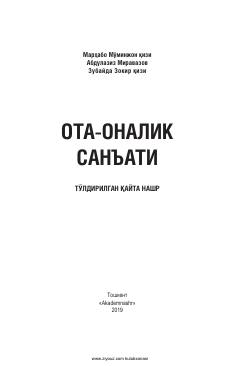

OSFarzand tarbiyasi va ota-ona munosabatlari bo'yicha amaliy va psixologik maslahatlar to'plami.
Ushbu kitobda farzand tarbiyasida ota-onalarga ko'makchi bo'ladigan amaliy maslahatlar va tavsiyalar jamlangan. Unda ota-ona va farzand o'rtasidagi munosabatlar, bolaning qobiliyatlarini aniqlash va ularni to'g'ri yo'naltirish masalalari tahlil qilinadi.